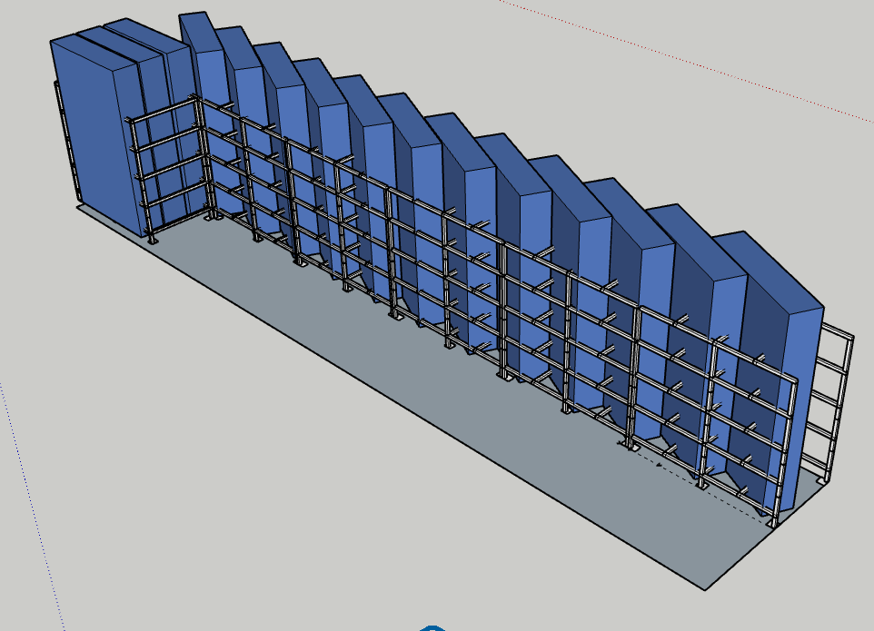
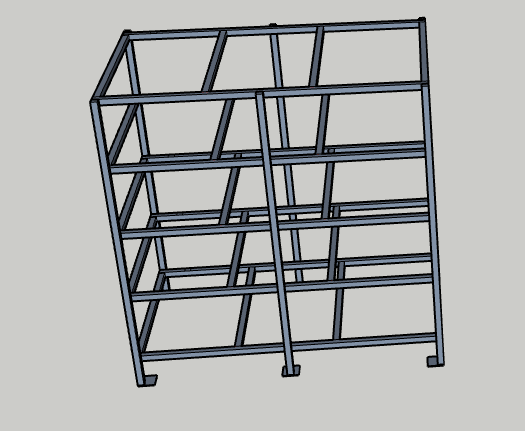
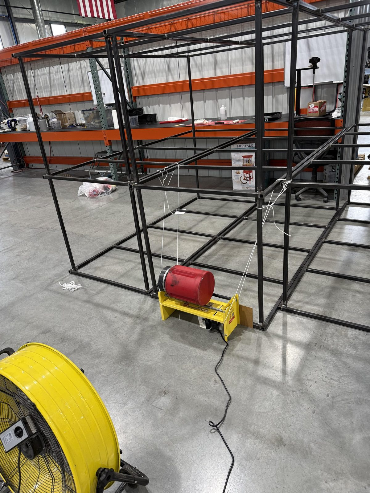

Engineering Intern · Aerodine Composites · Summer 2026
Angled Racking for a Prepreg Cold-Storage Freezer



The problem
Prepreg has to stay below freezing to keep the resin from advancing, so the shop's inventory lives in a walk-in freezer measuring 90 in deep by 418 in long. It had no internal structure, so boxes were stacked on the floor. Most of the height went unused, the weight of a stack sat on the material at the bottom, and only the top box was reachable. As company inventory expanded, this issue would need to be addressed thoroughly rather than ignored.
Constraints
- Aisle. Pallet carriers drive the full length of the freezer, which reserves 48 in and leaves 42 in of depth along the wall.
- Box size. The largest box in inventory is 60 × 14 × 14 in. Allowing for tube wall on both sides and enough clearance to slide one in and out, each slot needed 64 in.
- Load. Roughly 100 lb per box, with little enough deflection that a loaded level does not bind the box above it.
- Environment. A freezer opened repeatedly cycles through the dew point, so the structure sees condensation and frost.
The first two set the geometry. A 64 in slot does not fit flat in 42 in of depth, so the shelves had to tilt, and the angle is just the ratio: cos−1(42/64) = 49°. At that angle a full-length box sits inside exactly 42 in of horizontal depth, the aisle stays a full four feet, and the racking still runs the entire 418 in length of the freezer.
What I did
I measured the freezer interior and the inventory, then modeled the racking in SketchUp with the boxes included as solids, so the angle, the slot pitch, and the aisle could be checked against each other instead of one at a time. Several configurations went through before the layout settled. The single-bay study above is an early one; the version we built dropped the feet and picked up another set of ribs once the frame sat directly on the floor.
For structure I specified 1.5 in square steel tube. It carried the load with margin at these spans, it welds cleanly, and the closed section gives frost far less surface to collect on than an open channel or angle would. I fabricated the unit with one other team member, welding the frame and shelf levels to the modeled dimensions. A few joints that were easy to draw turned out to be hard to reach with a torch once the frame was tacked together, so the weld order ended up mattering as much as the geometry.
Skills practiced
- Design to a fixed envelope under a non-negotiable access constraint
- Geometric problem solving and dimensional analysis
- SketchUp solid modeling, including modeling the payload to verify fit
- Structural material selection for load and service environment
- Steel fabrication and welding in a two-person team